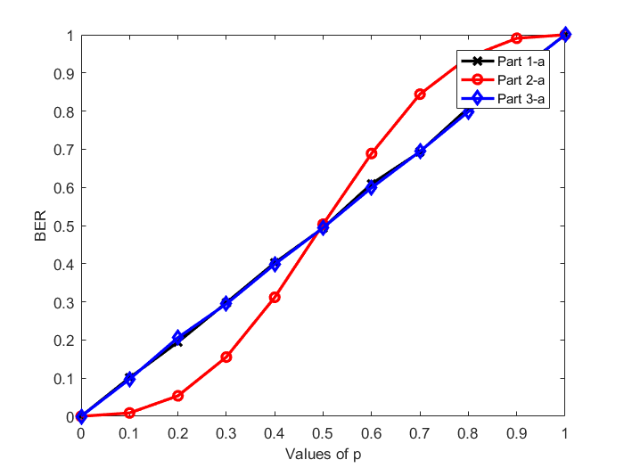

Alexandria University Faculty of Engineering Electrical and Electronic Engineering Department
Course: Digital Communications Lab
Lab No. 1: Basics of BER calculation and channel modeling
Contents
- Simulation parameters
- Part 1: BER for simple BSC channel
- Part 1-a: Effect of bit flipping probability on BER
- WRITE YOUR CODE HERE
- Part 2: BER for simple bit-flipping channel with multiple samples
- Part 2-a: Effect of bit flipping probability on BER
- WRITE YOUR CODE HERE
- Part 3: BER for simple bit-flipping channel with multiple samples and correlated channel
- Part 3-a: Effect of bit flipping probability on BER
- WRITE YOUR CODE HERE
- Part 4: Effect of number of repetitions on BER
- WRITE YOUR CODE HERE
Simulation parameters
N_bits = 10000; % Total number of bits p = 0.2; % Channel parameter (probability of bit flipping)
Part 1: BER for simple BSC channel
% Generate a bit sequence bit_seq = GenerateBits(N_bits); %[DONE] IMPLEMENT THIS: Generate a sequence of bits equal to the total number of bits % Pass the bit sequence through the channel rec_sample_seq = BSC(bit_seq,1,p); % Generate the received samples after passing through the bit flipping channel % Decode bits from received bit sequence rec_bit_seq = DecodeBitsFromSamples(rec_sample_seq,'part_1'); % IMPLEMENT THIS: Decode the received bits % Compute the BER BER_case_1 = ComputeBER(bit_seq,rec_bit_seq); %[DONE] IMPLEMENT THIS: Calculate the bit error rate
Part 1-a: Effect of bit flipping probability on BER
GOAL: Make a plot for the BER versus different values of the channel parameter p
p_vect = 0:0.1:1; % Use this vector to extract different values of p in your code BER_case_1_vec = zeros(size(p_vect)); % Use this vector to store the resultant BER
WRITE YOUR CODE HERE
for p_ind = 1:length(p_vect) rec_sample_seq = BSC(bit_seq,1,p_vect(p_ind)); rec_bit_seq = DecodeBitsFromSamples(rec_sample_seq,'part_1'); BER_case_1_vec(p_ind) = ComputeBER(bit_seq,rec_bit_seq); end
Part 2: BER for simple bit-flipping channel with multiple samples
% System parameters fs = 5; % Number of samples per symbol (bit) % Generate a bit sequence bit_seq = GenerateBits(N_bits); % Generate a sequence of bits equal to the total number of bits % Generate samples from bits sample_seq = GenerateSamples(bit_seq,fs); %[DONE] IMPLEMENT THIS: Generate a sequence of samples for each bit % Pass the sample sequence through the channel rec_sample_seq = BSC(sample_seq,fs,p); % Generate the received samples after passing through the bit flipping channel % Decode bits from received bit sequence rec_bit_seq = DecodeBitsFromSamples(rec_sample_seq,'part_2',fs); %[DONE] IMPLEMENT THIS: Decode the received bits % Compute the BER BER_case_2 = ComputeBER(bit_seq,rec_bit_seq); % Calculate the bit error rate
Part 2-a: Effect of bit flipping probability on BER
GOAL: Make a plot for the BER versus different values of the channel parameter p
p_vect = 0:0.1:1; % Use this vector to extract different values of p in your code BER_case_2_vec = zeros(size(p_vect)); % Use this vector to store the resultant BER
WRITE YOUR CODE HERE
for p_ind = 1:length(p_vect) rec_sample_seq = BSC(sample_seq,fs,p_vect(p_ind)); rec_bit_seq = DecodeBitsFromSamples(rec_sample_seq,'part_2',fs); BER_case_2_vec(p_ind) = ComputeBER(bit_seq,rec_bit_seq); end
Part 3: BER for simple bit-flipping channel with multiple samples and correlated channel
fs=5; % Generate a bit sequence bit_seq = GenerateBits(N_bits); % Generate a sequence of bits equal to the total number of bits % Generate samples from bits sample_seq = GenerateSamples(bit_seq,fs); % Generate a sequence of samples for each bit % Pass the sample sequence through the channel rec_sample_seq = BSC(sample_seq,fs,p,'correlated'); % Generate the received samples after passing through the bit flipping channel % Decode bits from received bit sequence rec_bit_seq = DecodeBitsFromSamples(rec_sample_seq,'part_3',fs); % IMPLEMENT THIS: Decode the received bits % Compute the BER BER_case_3 = ComputeBER(bit_seq,rec_bit_seq); % Calculate the bit error rate
Part 3-a: Effect of bit flipping probability on BER
GOAL: Make a plot for the BER versus different values of the channel parameter p
p_vect = 0:0.1:1; % Use this vector to extract different values of p in your code BER_case_3_vec = zeros(size(p_vect)); % Use this vector to store the resultant BER
WRITE YOUR CODE HERE
for p_ind = 1:length(p_vect) rec_sample_seq = BSC(sample_seq,fs,p_vect(p_ind),'correlated'); rec_bit_seq = DecodeBitsFromSamples(rec_sample_seq,'part_3',fs); BER_case_3_vec(p_ind) = ComputeBER(bit_seq,rec_bit_seq); end
% Plotting results figure plot(p_vect,BER_case_1_vec,'x-k','linewidth',2); hold on; plot(p_vect,BER_case_2_vec,'o-r','linewidth',2); hold on; plot(p_vect,BER_case_3_vec,'d-b','linewidth',2); hold on; xlabel('Values of p','fontsize',10) ylabel('BER','fontsize',10) legend('Part 1-a','Part 2-a','Part 3-a','fontsize',10)
Warning: Using an integer to specify the legend location is not supported. Specify the legend location with respect to the axes using the 'Location' parameter. Warning: Ignoring extra legend entries.
Part 4: Effect of number of repetitions on BER
GOAL: Make a plot for the BER versus the number of repetitions used in the transmitter of part 2 There is no template code for this part. Please write your own complete code here. You can re-use any of the codes in the previous parts
% Generate a bit sequence fs_vect = 1:20; % Use this vector to extract different values of p in your code p=0.2; BER_case_4_vec = zeros(size(fs_vect)); % Use this vector to store the resultant BER bit_seq = GenerateBits(N_bits); % Generate a sequence of bits equal to the total number of bits for fs_ind = 1:length(fs_vect) % Generate samples from bits sample_seq = GenerateSamples(bit_seq,fs_vect(fs_ind)); %[DONE] IMPLEMENT THIS: Generate a sequence of samples for each bit rec_sample_seq = BSC(sample_seq,fs_vect(fs_ind),p); rec_bit_seq = DecodeBitsFromSamples(rec_sample_seq,'part_2',fs_vect(fs_ind)); BER_case_4_vec(fs_ind) = ComputeBER(bit_seq,rec_bit_seq); end figure plot(fs_vect,BER_case_4_vec,'linewidth',2); hold on; xlabel('Values of fs','fontsize',10) ylabel('BER','fontsize',10)